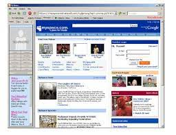
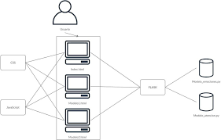
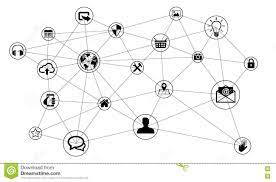

| Web | Descripción | Imagen |
|---|---|---|
| Web 1.0 | Internet que solamente brindaba información y no existía interacción con el usuario |  |
| Web 2.0 | Es cuando el usuario final puede interactuar con el contenido en internet por medio de redes sociales, e incluso crearla por medio de Blogs. |  |
| Web 3.0 | Se asocia a la web semántica, un concepto que se refiere al uso de un lenguaje en la red. Por ejemplo, la búsqueda de contenidos utilizando palabras clave. |  |
| Web 4.0 | Se centra en ofrecer un comportamiento más inteligente y más predictivo, de modo que podamos, con sólo realizar una afirmación o una llamada, poner en marcha un conjunto de acciones que tendrán como resultando aquello que pedimos, deseamos o decimos.s |